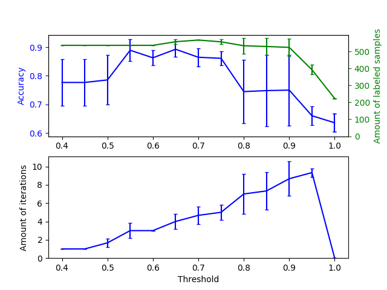

Note
Go to the end to download the full example code or to run this example in your browser via Binder
Effect of varying threshold for self-training¶
This example illustrates the effect of a varying threshold on self-training.
The breast_cancer dataset is loaded, and labels are deleted such that only 50
out of 569 samples have labels. A SelfTrainingClassifier is fitted on this
dataset, with varying thresholds.
The upper graph shows the amount of labeled samples that the classifier has available by the end of fit, and the accuracy of the classifier. The lower graph shows the last iteration in which a sample was labeled. All values are cross validated with 3 folds.
At low thresholds (in [0.4, 0.5]), the classifier learns from samples that were labeled with a low confidence. These low-confidence samples are likely have incorrect predicted labels, and as a result, fitting on these incorrect labels produces a poor accuracy. Note that the classifier labels almost all of the samples, and only takes one iteration.
For very high thresholds (in [0.9, 1)) we observe that the classifier does not augment its dataset (the amount of self-labeled samples is 0). As a result, the accuracy achieved with a threshold of 0.9999 is the same as a normal supervised classifier would achieve.
The optimal accuracy lies in between both of these extremes at a threshold of around 0.7.
# Authors: Oliver Rausch <rauscho@ethz.ch>
# License: BSD
import matplotlib.pyplot as plt
import numpy as np
from sklearn import datasets
from sklearn.metrics import accuracy_score
from sklearn.model_selection import StratifiedKFold
from sklearn.semi_supervised import SelfTrainingClassifier
from sklearn.svm import SVC
from sklearn.utils import shuffle
n_splits = 3
X, y = datasets.load_breast_cancer(return_X_y=True)
X, y = shuffle(X, y, random_state=42)
y_true = y.copy()
y[50:] = -1
total_samples = y.shape[0]
base_classifier = SVC(probability=True, gamma=0.001, random_state=42)
x_values = np.arange(0.4, 1.05, 0.05)
x_values = np.append(x_values, 0.99999)
scores = np.empty((x_values.shape[0], n_splits))
amount_labeled = np.empty((x_values.shape[0], n_splits))
amount_iterations = np.empty((x_values.shape[0], n_splits))
for i, threshold in enumerate(x_values):
self_training_clf = SelfTrainingClassifier(base_classifier, threshold=threshold)
# We need manual cross validation so that we don't treat -1 as a separate
# class when computing accuracy
skfolds = StratifiedKFold(n_splits=n_splits)
for fold, (train_index, test_index) in enumerate(skfolds.split(X, y)):
X_train = X[train_index]
y_train = y[train_index]
X_test = X[test_index]
y_test = y[test_index]
y_test_true = y_true[test_index]
self_training_clf.fit(X_train, y_train)
# The amount of labeled samples that at the end of fitting
amount_labeled[i, fold] = (
total_samples
- np.unique(self_training_clf.labeled_iter_, return_counts=True)[1][0]
)
# The last iteration the classifier labeled a sample in
amount_iterations[i, fold] = np.max(self_training_clf.labeled_iter_)
y_pred = self_training_clf.predict(X_test)
scores[i, fold] = accuracy_score(y_test_true, y_pred)
ax1 = plt.subplot(211)
ax1.errorbar(
x_values, scores.mean(axis=1), yerr=scores.std(axis=1), capsize=2, color="b"
)
ax1.set_ylabel("Accuracy", color="b")
ax1.tick_params("y", colors="b")
ax2 = ax1.twinx()
ax2.errorbar(
x_values,
amount_labeled.mean(axis=1),
yerr=amount_labeled.std(axis=1),
capsize=2,
color="g",
)
ax2.set_ylim(bottom=0)
ax2.set_ylabel("Amount of labeled samples", color="g")
ax2.tick_params("y", colors="g")
ax3 = plt.subplot(212, sharex=ax1)
ax3.errorbar(
x_values,
amount_iterations.mean(axis=1),
yerr=amount_iterations.std(axis=1),
capsize=2,
color="b",
)
ax3.set_ylim(bottom=0)
ax3.set_ylabel("Amount of iterations")
ax3.set_xlabel("Threshold")
plt.show()
Total running time of the script: (0 minutes 3.821 seconds)